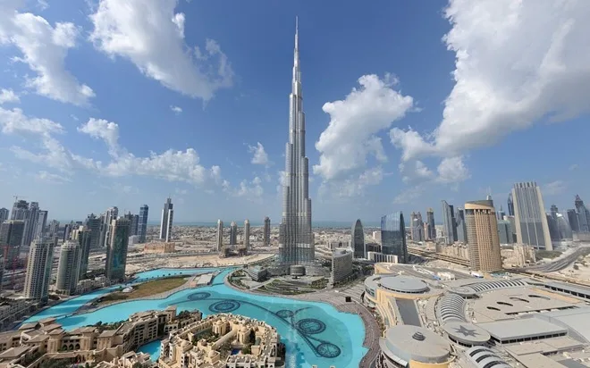
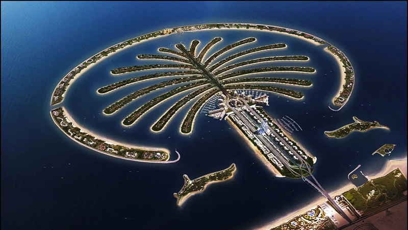
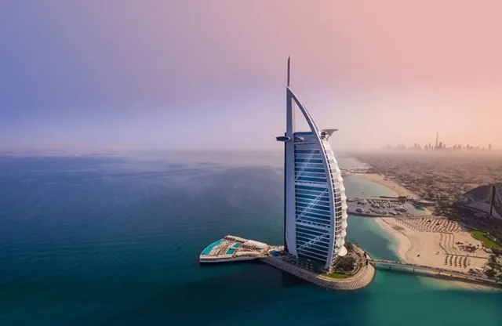
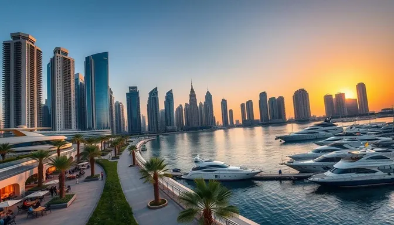

Dubaj
Počasí v Dubaji
Dubaj má horké pouštní klima, které přináší velmi vysoké teploty po celý rok. Nejvhodnějším obdobím pro návštěvu jsou zimní měsíce, kdy teploty nejsou tak extrémně vysoké. V létě teploty často přesahují 40°C, což je ideální pro ty, kteří milují vedro. Mořská voda zůstává teplá po celý rok, takže si můžete užívat koupání i během chladnějších měsíců.
O Dubaji
Dubaj je jedno z nejmodernějších měst na světě, které se nachází v Spojených arabských emirátech. Město je známé pro svou luxusní architekturu, ultramoderní infrastrukturu, impozantní mrakodrapy a neuvěřitelné umělé ostrovy.
Město se nachází v jednom z nejteplejších klimatických pásmech, což z něj činí ideální místo pro milovníky slunečných pláží a horkého počasí.
Roční počasí v Dubaji
| Měsíc | Průměrná teplota (°C) | Teplota moře (°C) |
|---|---|---|
| Leden | 18-25 | 22 |
| Únor | 19-26 | 22 |
| Březen | 21-28 | 23 |
| Duben | 24-33 | 24 |
| Květen | 28-38 | 27 |
| Červen | 31-41 | 29 |
| Červenec | 33-43 | 30 |
| Srpen | 33-44 | 31 |
| Září | 30-40 | 30 |
| Říjen | 26-36 | 28 |
| Listopad | 22-30 | 26 |
| Prosinec | 19-26 | 24 |
Top místa, která musíte navštívit

Burj Khalifa

Palm Jumeirah

Burj Al Arab
